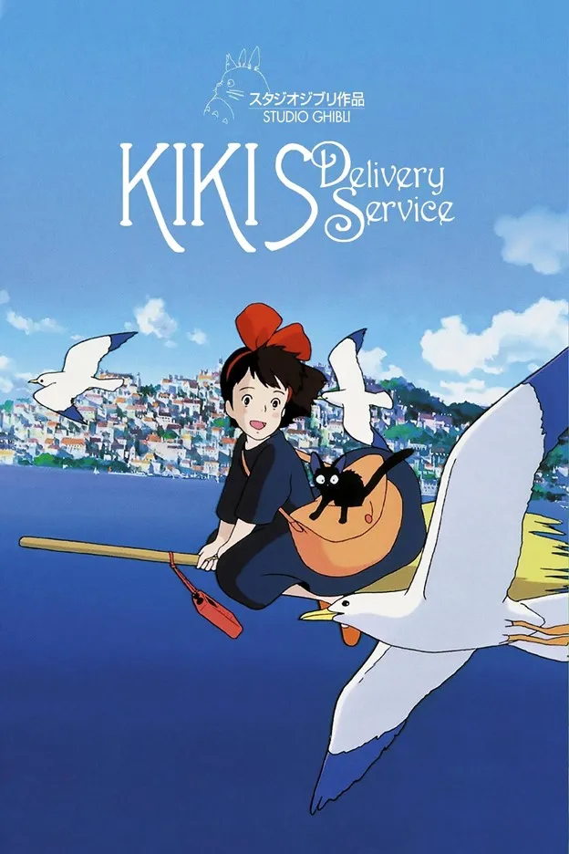

Sinopsis Film Kiki’s Delivery Service
Kiki’s Delivery Service (1989) ini berpusat pada kisah seorang gadis penyihir berusia 13 tahun. Kiki yang merupakan seorang penyihir harus mengikuti tradisi kuno dimana ia harus pergi ke kota lain untuk mengasah kemampuannya selama satu tahun.
Di film ini diceritakan dimana Kiki harus beradaptasi dengan lingkungan baru karena orang-orang disekitarnya ada yang merasa aneh bahkan terganggu dengan statusnya sebagai seorang penyihir. Tapi, masih ada juga orang-orang baik yang menggap itu biasa saja bahkan terkagum-kagum dengan kekuatan sihir Kiki.
Di usianya yang terbilang masih muda ia harus mencari pekerjaan dengan memanfaatkan kekuatan sihirnya agar bisa bertahan hidup di kota baru. Belum lagi ia juga harus bisa menyelesaikan masalah kepercayaan dirinya yang sempat hilang karena merasa terintimidasi oleh anak-anak lain. Ketika Kiki sedang mencoba mencari tempat tinggal, Kiki dikejar oleh seorang anak laki-laki Kopiri Tombo (Yamaguchi Kappei) yang terobsesi dengan penerbangan dan kagum dengan kemampuan terbang Kiki. Selain film ini terdapat banyak film lainnya di studio ghibli